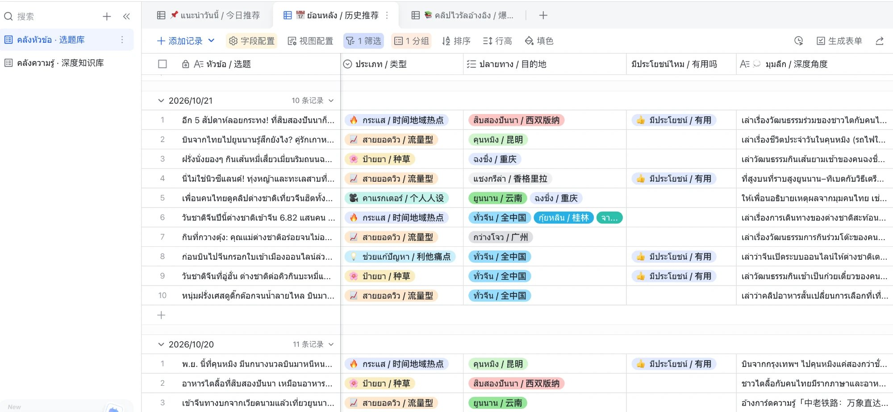

文旅热点助手
给泰国文旅内容团队用，他们给东南亚观众做中国旅游视频。痛点：每天拍什么，泰国同事一上午在各平台刷，还隔着文化差异。做成一个每天自动跑的助手：搜、筛、拆解、出方案、推到 Lark，团队点 👍 它下周就学。
整体框架
每天 8:40 自动跑一遍
Before人每天刷平台找选题After一张卡片 + 一张表，团队只点 👍 👎
01搜爆款选题自动
- 每天搜东南亚和国内的旅游热点、低粉爆款，按团队标准筛，再分类
02做爆款拆解AI
- 简单拆解：每条一句爆款公式，加参考方案
- 深度拆解：碰到爆款话题或中泰文化差异，写成知识卡，让泰国团队先理解中国背景，再去做视频
03推送与沉淀Lark
- 日报推到 Lark 群，同步写进选题库和深度知识库
04自主学习团队 + AI
- 搜索词：标签会过时、流量会变，好词转正、过时停用
- 深度知识：知识库一天天累积，内容越做越深
- 团队偏好：团队在表格里点 👍 👎，有用的方向多拆，没用的不再拆
长什么样
